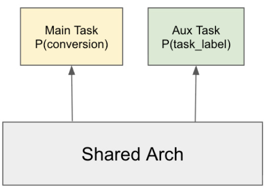
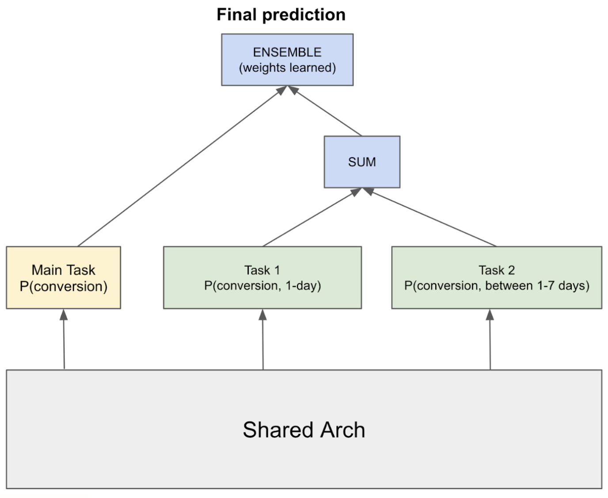

目录 · 8 节
1一、它到底在解决什么问题2二、哪些信号可以拿来当辅助标签3三、怎么把信号接进模型4四、信号太吵怎么办：LaCo5五、结果：每项技术的 NE 改进在 0.10% 到 0.25% 之间6六、我认为它的局限7七、一个推荐/搜索团队可以怎么试8八、结论广告 CVR 模型靠购买、安装这类转化事件做训练标签，但转化很稀少，Meta 这个模型的训练样本里约一半拿不到转化标签。论文借别的信号来补：点击前看广告的时长、加购事件、广告内容的语义等，都作为辅助任务和主任务一起训练，上线推理不增加开销。辅助信号往往很吵。最有效的办法叫 LaCo，它处理只有是、否两种取值的信号，比如用户有没有加购。LaCo 把几个这样的信号用与、或、异或组合起来，挑出和真实转化最吻合、尤其误报最少的组合，当作一个新标签来训练。它让离线 NE 降低 0.25%。这些改进随其他优化一起上线后，A/B 实验里广告主的转化量有统计显著的提升。对做转化预估的团队来说，先把辅助标签做准，比堆更多辅助任务更有用。
做转化预估的团队值得花十分钟读。论文也介绍了几种多任务结构上的改法，但重点是一个更实际的问题：主标签缺得厉害时，该拿哪些信号当辅助标签，以及怎样把这些信号先清洗干净。核心思想一句话：辅助标签的准确比数量更重要，所以宁可把几个信号合成一个误报少的标签，也不要每个信号各开一个任务。论文很短，证据只有一张离线表和一句上线结论，读的时候要把它当经验总结，而不是严格的对照实验。
一、它到底在解决什么问题
pCVR 模型预测的是：用户点了这条广告之后，会不会在归因窗口内完成购买或安装。每条训练样本是一次被点击的广告曝光，主标签就是这次点击后有没有转化。
问题出在主标签上。转化本来就少，很多用户还因为隐私设置或归因限制，根本回传不到转化结果。论文的基线模型里，约 50% 的训练样本没有转化标签。模型只能从剩下一半样本里学“谁会转化”，监督信号很薄。
但点击之后，用户其实留下了不少别的痕迹。下面用一个电商广告演示一下（示意）：
| 点击 | 落地页停留 | 加购 | 转化标签 |
|---|---|---|---|
| 用户甲点了跑鞋广告 | 45 秒 | 有 | 缺失 |
| 用户乙点了跑鞋广告 | 3 秒 | 无 | 缺失 |
| 用户丙点了跑鞋广告 | 2 分钟 | 有 | 已购买 |
甲和乙的转化标签都缺失，主任务从这两条样本里学不到东西。可甲停留 45 秒还加了购，乙 3 秒就走了，这两个人的购买意向显然不同。辅助信号要补的就是这部分信息。
怎么用这些信号？论文用的是多任务学习：模型底部共享，顶部除了预测转化的主任务，再接几个小的全连接头，各自预测一个辅助标签，比如“停留是否超过 10 秒”。训练时，辅助头的损失也会回传到共享部分，让共享的表示学到更多购买意向。上线推理时只取主任务的输出，辅助头不参与打分。停留时长、加购这些信号发生在点击之后，所以它们只当训练标签，不当输入特征，推理时模型也看不到它们。

二、哪些信号可以拿来当辅助标签
论文把可用信号分成四类，下面讲其中三类。第一类是行为信号，即用户对这条广告做的动作：点击前看了多久，第三方追踪回传的“加购”这类漏斗事件，跳到浏览器后过多久才回到 app（也就是停留时长）。
第二类是语义信号，靠广告和会话的内容判断。例如这次会话里浏览的商品类目和广告类目一致，或者会话的 URL 里出现了“confirmation”这类通常意味着下单完成的词。
第三类是合成信号，用其他场景里用户和广告主的互动造数据。论文举的例子是给 pCTR 模型用：拿用户观看广告主视频内容的记录造训练数据。这类标签的可信度比主标签低，所以只当辅助监督，不当主标签。
三、怎么把信号接进模型
最直接的接法按信号类型来定。概率或是否型的信号接一个二分类辅助任务。停留时长这种数值型信号接一个回归任务，有些信号先取对数效果更好。论文提到，主任务本身也是回归时，回归辅助任务特别有效。在这个基础上，论文给了三种更进一步的做法。
为什么要把停留时长分成几档？
只用“停留是否超过 10 秒”做二分类，停留十几秒的用户和停留好几分钟的用户会得到同一个标签，模型分不出两者意向的强弱。所以线性化标签把连续或有序的信号切成几档，变成多分类任务。论文的例子是把停留时长分成三档：10 秒以内、10 秒到 1 分钟、1 分钟以上。
档位边界不好定。论文的经验是用分位数当边界，分 2 到 4 档效果较好。不同广告类型的边界也可以不同：电商广告用户要想更久才下单，边界可以设长一些；留资类广告转化快，边界设短一些。
几个信号也可以合进一个多分类标签。按离转化的远近排一个顺序：“转化”最近，其次“停留超过 10 秒”，再次“HTML 内容已加载”。每条样本的类别，取这个顺序里第一个成立的信号。前面表里的用户甲没有转化记录，但停留了 45 秒，所以甲的类别是“停留超过 10 秒”。用户丙已购买，类别是“转化”。
为什么要加门控？
有的辅助标签只在部分样本上存在。停留时长只有在点击后打开网页浏览器时才记得到，点开应用商店的安装广告就没有这个值。如果把缺失当成负样本，模型会学到“这些人都没兴趣”，反而拖累效果。门控的做法是给辅助任务设一个条件，只在满足条件的样本上计算它的损失，其余样本这个头不参与训练。
拆分结构：把一个转化窗口拆成两段
第三种做法改的是主任务本身。转化窗口是点击后 7 天时，可以把它拆成两个子任务：0 到 1 天内转化，1 到 7 天内转化。论文要求拆出的子任务互斥，而且合起来覆盖整个 7 天窗口，所以两段概率相加就是 7 天内的转化概率。比如一个样本 0 到 1 天的预测是 0.03，1 到 7 天是 0.01（示意），合起来就是 7 天内 0.04。
两个子任务的预测相加后，再和原来主任务的预测做一次集成，作为最终预测。论文图 2 把这一步标为按学到的权重组合。这里要注意，拆出来的两个子任务参与了最终打分，和前面只在训练时出现的辅助头不同。

四、信号太吵怎么办：LaCo
辅助信号天生有噪声。停留很久不代表会买，HTML 加载完成更说明不了什么。论文把噪声分成三类：日志记录出错，可以过滤异常值；标签缺失，可以用门控；弱标签，也就是离转化越远的信号越不准。越往漏斗下游走，信号的精确率越高，但覆盖的样本越少。
信号多了以后，每个信号单独开一个辅助任务，有时反而变差，因为几个任务的梯度会互相干扰。LaCo（Label Combination）换了一个思路：在训练开始前的标签设计阶段，就把几个信号合成一个更干净的标签，只用这一个标签做辅助任务。
LaCo 怎么挑组合
LaCo 的每个候选标签是一个逻辑式：从可用信号里挑几个，用与、或、或非、与非、异或这几种运算连起来，比如“加购”与“停留超过 10 秒”。每个候选标签都拿真实转化标签当参照，算出精确率和召回率，再合成下面这个分数，取分数最高的那个：
其中 P 是精确率，R 是召回率。 越小，分数越看重精确率； 时两者同样重要。
举个能手算的例子（示意）：只有“加购”和“停留超过 10 秒”两个信号，并且假设每条样本上两个信号都有记录。两者都成立才算正（与），精确率 0.9、召回率 0.3；任一成立就算正（或），精确率 0.5、召回率 0.8。取 时，“与”的分数约 0.90，“或”约 0.50，选“与”。取 时，“与”是 0.45，“或”约 0.62，反过来选“或”。所以 实际上决定了：要一个准但覆盖少的标签，还是一个覆盖多但误报多的标签。
转化标签在这里只用来离线挑组合。挑好以后，组合标签作为训练目标；上线打分时，模型既看不到转化标签，也看不到这些辅助信号。 Hoot 说

- β=0.02 时，“与”：精确率 0.9、召回率 0.3，分数约 0.90。
- “或”：精确率 0.5、召回率 0.8，分数约 0.50。β 很小时分数几乎只看精确率，所以选“与”。
示意：沿用正文的两个信号例子，假设每条样本上两个信号都有记录；精确率、召回率是示意数字，β=0.02 是论文里效果最好的取值。 出处: 正文第四节的手算例子；三个阶段的分工按论文第一节和第四节。
精确率比召回率重要
论文在一个转化预估模型上把 从 0.001 试到 10。最好的是 ，此时组合标签的精确率是 91%，召回率中等； 的设置一律变差。这说明对辅助标签来说，少一些误报比多覆盖一些样本更值钱。作者的经验是先把精确率保到 90% 左右，再在这个前提下尽量提高召回。最优的 会随模型和数据变化，需要各自调。
训练阶段的抗噪方法
除了 LaCo 这种在标签上下功夫的办法，论文还试了两种直接改训练过程的方法。一种是 DivideMix，另一种是 Tri-Training。论文说两者在它的 pCVR 模型上都有帮助，表 1 里把它们合成一行报告。
五、结果：每项技术的 NE 改进在 0.10% 到 0.25% 之间
论文的离线指标是 NE，越低越好。下表是每种技术各自加到基线模型上之后的 NE，每一行都是和同一个基线比，不是逐行叠加：
| 技术 | NE | 相对基线 |
|---|---|---|
| 基线 | 0.5400 | — |
| 加线性化标签 | 0.5392 | -0.15% |
| 加拆分结构 | 0.5393 | -0.13% |
| 加 LaCo | 0.5387 | -0.25% |
| 加抗噪训练 | 0.5395 | -0.10% |
LaCo 的改进最大，是第二名线性化标签的约 1.7 倍。这和论文的主张一致：把几个吵的信号合成一个准标签，比每个信号单独当任务更有效。不过表里没有“每个信号各开一个辅助任务”这一行，这个比较只能从作者的描述里看到。
这些数字绝对值很小，NE 只差 0.0005 到 0.0013。作者的说法是，在他们的系统里这种量级的离线改进，过去通常和可测到的线上收益相关。上线时，这些技术和其他改进一起发布，A/B 实验里广告主的转化量有统计显著的提升，但无法拆出每项技术各自贡献了多少。
六、我认为它的局限
第一，证据很薄。全部结果是一张表、一个模型、四个数字，没有误差范围，也没有多次运行的波动。NE 差 0.0005 的改进，在别的系统里可能落在噪声以内。
第二，线上效果无法归因。论文只说组合发布后转化量有统计显著的提升，没有给出幅度，同批还有其他改进。想评估 LaCo 单独值多少，只能自己做实验。
第三， 只在一个转化模型上调出来，作者也说最优值随模型变化。换一个转化率差很多的业务，精确率 90% 这条经验线未必成立，需要重新扫一遍 。
七、一个推荐/搜索团队可以怎么试
- 先盘点手上有哪些点击后的信号，比如停留、加购、页面加载、关键页面访问，并在有转化标签的样本上算出每个信号相对转化的精确率和召回率。这一步不用训练模型，只做离线统计，就能先看出哪些信号值得用。
- 用 LaCo 的办法离线穷举这些信号的逻辑组合，先只看精确率在 90% 左右的组合里召回最高的那个。把它接成一个辅助任务，和“每个信号各一个辅助任务”的版本做离线对比，看 NE 或 logloss 哪个更低。
- 对只在部分样本上存在的信号加门控，再试线性化标签，把停留时长分 2 到 4 档。每次只改一项，确认每项各自有没有收益。
- 离线有效后再上 A/B。辅助头上线不参与打分，推理成本基本不变；拆分结构会改变最终打分，要单独评估。
八、结论
最值得带走的一点：主标签缺失严重时，花力气把辅助标签做准，比多加几个辅助任务更划算。
| 维度 | 评价 |
|---|---|
| 问题重要性 | 高。转化标签稀疏、缺失是转化预估的普遍问题，论文模型里一半样本没有转化标签 |
| 方法创新性 | 中低。线性化标签、门控、拆分都是常见技巧，LaCo 的逻辑组合加 F-beta 挑选是最有新意的部分 |
| 实验证据 | 弱。只有一张离线表，没有方差，线上结果是与其他改进的合并发布 |
| 工程成本 | 低。LaCo 是离线的标签构造，辅助头不进推理；拆分结构要多维护两个打分头 |
| 是否值得尝试 | 值得。LaCo 的离线分析成本很低，先算各信号的精确率和召回率就能判断有没有用 |
读完这篇，你觉得
夜读鸮记下了，谢谢你的反馈。
点一下即可，无需登录；再点一次撤回。只统计匿名次数，不记录你是谁。
讨论
欢迎补充实验细节、复现经验或不同看法。需 GitHub 登录。
正在加载讨论…